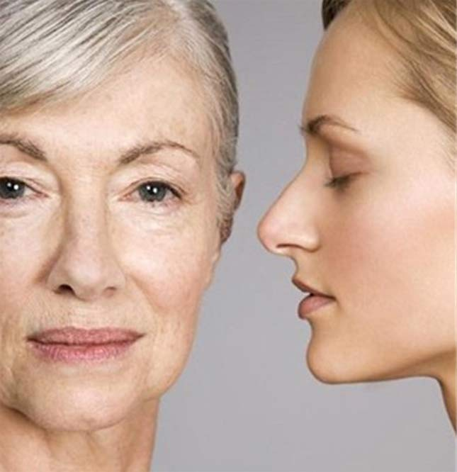
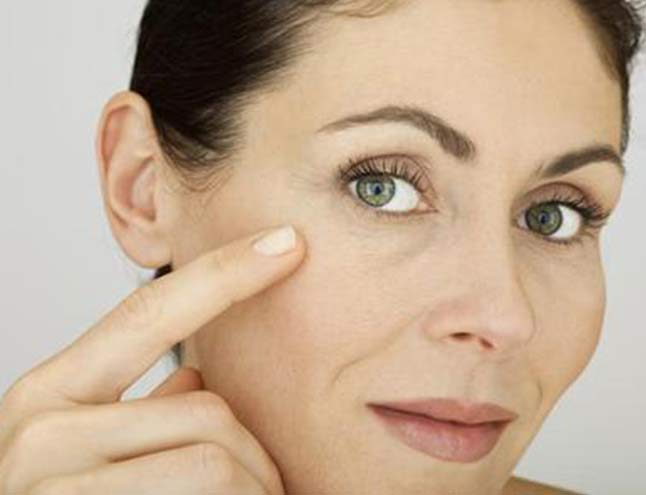
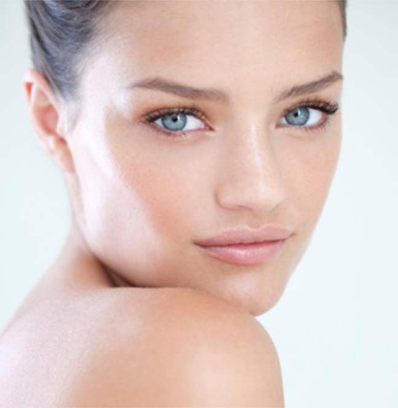

你敢接受挑战，做一次勇敢的肌肤老化程度测试吗？可以看看自己的肌肤处于什么状态，再来找解决之道！

肌肤的老化三阶段之测试一
根据你的实际情况，在以下选项中打勾

触摸肌肤，弹性远不如从前
鼻翼两旁法令纹明显
眼睛周围有明显的眼袋或鱼尾纹
面部光泽持久暗淡，黄气明显
肌肤干燥，粗糙，易敏感
在以上五个选项中，有两个以上（含两个）选项符合你目前的情况，那么说明你的肌肤已进入深层老化阶段：皮肤弹性和保湿性已明显衰退，干纹甚至黑斑开始向面部蔓延。
这时需要针对面部和眼部肌肤加强抗皱、紧致、保湿的日护理，同时还需要强化一些针对性的精华护理。另外，注意增加饮食中的蛋白质和维生素，保持豁达乐观的心态！
如果你的肌肤还没有进入深层老化，恭喜你！那么请您进入“肌肤的老化阶段之测试二”。
肌肤的老化三阶段之测试二
根据你的实际情况，在以下选项中打勾
感觉工作压力大，容易失眠
面部轮廓开始由“V”转“U”，拍出的照片总觉得不美丽
起床后30分钟内枕印不容易消退
眼睛周围出现细小纹路，眼角开始有了下垂的迹象
睡不好觉，面部经常出现浮肿的现象
在以上五个选项中，有两个以上（含两个）选项符合你目前的情况，那么说明你的肌肤目前在初期老化阶段：皮肤已开始走下坡路，水分逐渐减少，光泽度和肌肤弹性下降，
你需要开始使用一些提升肌肤光泽度和弹性的产品，预防松弛的全面爆发。另外需特别关注眼部周围的肌肤呵护，避免细小皱纹的进一步加剧。除了早晚两次保养外，每周还应增加一次专业护理（按摩、敷面膜等）。化妆以淡妆为宜，还要特别注意保湿防晒，平时应多吃蔬菜水果。
如果经过两轮测试，你还没有确认肌肤状态，暂时先恭喜你一下，快快进入第三站--“肌肤的老化阶段之测试三”来看看吧！
肌肤的老化三阶段之测试三
根据你的实际情况，在以下选项中打勾
喜欢追剧，每天12点以后睡觉
皮肤逐渐失去明亮光洁
皮肤摸上去感觉有点粗糙
每天面对电脑时间长于5小时
即使用了比较滋润的护肤品，还是感觉肌肤有点干
怎么样，这个测试中，是否有两个以上（含两个）选项符合你目前的情况？如果符合，那么说明你的肌肤目前处于老化的“隐形期”:虽然目前肌肤状态良好，但电脑辐射，不良的生活作息等都会带走肌肤的水分，为肌肤埋下早衰的隐患。
若想保养则要坚持早晚两次的清洁，在日常护理中穿插融保湿和延缓老化为一体的预防性产品。平时注意防晒，避免熬夜，增加饮食中的维生素，多饮水。
现在就来看看不同程度老化肌肤的保养之道吧！
深层老化MM，你需要：

玫琳凯抗击肌肤深层衰老，并密集提升肌肤紧实度的的产品组合：幻时三合洁面乳，幻时新生保湿柔肤水，幻时佳紧颜日、晚霜，幻时佳紧颜眼霜，滋润修颜粉底乳，配合抗皱精华素，幻时佳紧颜精华露、VC精华露和幻时梦唤新生面膜，专利抗老紧致成分，直击肌肤衰老松弛源头，让肌肤逆转，恢复紧致小V脸。
初期老化MM，你需要：
建议使用三合一洁面乳，幻时新生保湿柔肤水，幻时佳紧颜日、晚霜，幻时佳紧颜眼霜，滋润修颜粉底乳的同时配合维C精华露、幻时梦唤新生面膜。针对肌肤状态和需求，强化保湿、紧致和防护，让年轻轻舞飞扬～
隐形老化MM,你需要：

建议使用三合一洁面乳，幻时新生保湿柔肤水，抗皱保湿乳或防护日霜加上修复晚露、滋润修颜粉底乳以及幻时梦唤新生面膜，日护理和周护理不间断，让年轻无敌！